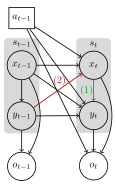

Defining a MOMDP
Since MOMDPs are a factored POMDP, we can integrate with the existing POMDPs.jl framework. In particular, the MOMDP type extends the POMDP type where the state is a tuple of the fully observed state and the partially observed state.
For discrete problems where we explictly are defining the problem, instead of defining the transition, states, stateindex, and initialstate functions, you need to define them for the fully observable and hidden state spaces separately.
For all other functions (e.g. observation, reward, etc.), the functions are exported from POMDPs.jl and need to be defined using a state as a tuple (x::X, y::Y) where X and Y are the types of the fully observed and partially observed states, respectively.
State Space
To define the state space for a MOMDP, the following functions are required:
states_x(m::MOMDP): Returns the set of all fully observable states.states_y(m::MOMDP): Returns the set of all partially observable states.
To index these states separately, use:
stateindex_x(m::MOMDP, state): Returns the index of the visible statexwherestateis a tuple of the form(x, y).stateindex_y(m::MOMDP, state): Returns the index of the hidden stateywherestateis a tuple of the form(x, y).
Initial State Distribution
The initial state distribution describes the probabilities of beginning the MOMDP in particular states. Given the factorized nature of MOMDPs, these distributions can also be factorized into two components:
initialstate_x(m::MOMDP): Provides the probability distribution over the fully observable states at the initial timestep.initialstate_y(m::MOMDP, x): Given a fully observable initial statex, this function returns the initial probability distribution over the partially observable states.
Additionally, a helper function, is_initial_distribution_independent(::MOMDP), can be used to indicate if the initial partially observable state distribution is independent of the initial fully observable state. Returning true here signals that the partially observable state distribution is unaffected by the choice of initial observable state. This helps speed up some parts of solvers (e.g. writing the initial state distribution when constructing the pomdpx file for SARSOP).
Transition Functions
Transitions are separately defined for the observable and hidden parts of the state:
transition_x(m::MOMDP, state, action): Provides the distribution over the next fully observable state $x^\prime$ given the current state $(x, y)$ and action $a$.transition_y(m::MOMDP, state, action, statep_visible): Returns the probability distribution over the next partially observable state $y^\prime$ given the current state $(x, y)$, action $a$, and the resulting fully observable state $x^\prime$.
Conditional Dependencies
As a default, MOMDPs.jl assumes the structure as shown in the diagram. However, a lot of problems have a simpler structure. For example, the visible state $x^\prime$ could only depend on the previous visible state $x$ and action $a$.
The prescence of the colored edges can designated using the following functions:
- Edge label $(1)$:
is_y_prime_dependent_on_x_prime(m::MOMDP) - Edge label $(2)$:
is_x_prime_dependent_on_y(m::MOMDP)
As a default, these functions return true, indicating the presence of the edges and thus the standard MOMDP structure. However, it is highly recommended to set these functions appropriately for your problem in order to improve performance of solvers.
Helper Functions
While states, stateindex, and initialstate are not required to be defined for a MOMDP, there are situations where having these function defined are useful. For discrete MODMPs, we extend these functions using the defined MOMDP functions.
states(m::MOMDP): Returns the full state space as a vector ofTuple{X,Y}whereXis the type of the fully observable state andYis the type of the partially observable state. This functions usesstates_xandstates_yto construct the full state space.stateindex(m::MOMDP, s): Returns the index of the statesin the state space. This function usesstateindex_xandstateindex_y.transition(m::MOMDP, s, a): Returns the transition distribution over the next state (each state is a tuple of(x, y)) given the current state and action. This function usestransition_xandtransition_yto construct the full transition distribution.initialstate(m::MOMDP): Returns the initial state distribution over the full state space. This function usesinitialstate_xandinitialstate_yto construct the full initial state distribution.
POMDP_of_Discrete_MOMDP
The POMDP_of_Discrete_MOMDP type is a wrapper around a MOMDP that allows for the use of existing POMDP solvers. It is a subtype of POMDP and thus can be used with any POMDP solver that is compatible with POMDPs.jl.
This type is used to convert a Discrete MOMDP into a POMDP. There are functions defined for this POMDP that use the functions defined for the MOMDP type. Primarily, it uses the helper functions defined above.
The resulting state space is the Cartesian product of the fully observable state space and the partially observable state space $\mathcal{X} \times \mathcal{Y}$. This might result in a slightly larger state space than required (e.g. if you define a single terminal state in either the fully observable or partially observable factored state spaces).
If the original observation space of the MOMDP is of size $\mathcal{O}$ and the visible state space is of size $\mathcal{X}$, then the observation space of the POMDP_of_Discrete_MOMDP is $\mathcal{X} \times \mathcal{O}$. Each observation is a tuple of the form (x, o) where x is a fully observable state and o is an observation.